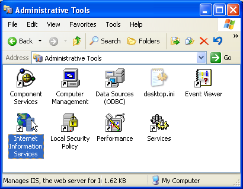

[Documentation Home]
[Installation Home]
Alphalinc Software Development Environment (ASDE) - Web server configuration (IIS)
- Open Windows Control Panel and double click on the Administrative tools icon.
Inside the Administrative tools window, locate the icon for Internet Information Services.
If it is not listed, go back to the install web server step.
Double click on that icon.
|

Figure 1 - Open IIS window
|
When you install IIS before Caché, the Caché installation
wizard automatically configure CSP settings in IIS.
- Locate the Default Web Site node, right click on it to create a new
Virtual Directory for Alphalinc resources.
|
Figure 2 - virtual directory creation for resources
|
- Locate the Default Web Site node, right click on it to create a new
Virtual Directory for Alphalinc resources. The wizard is shown.
|
Figure 3 - Direction creation wizard
|
- On the alias page, enter the same project and namespace name as in the previous step. For this example, it is AlphalincA. Remember that this
should be the same name that's been chosen for the Caché NAMESPACE for this project.
|
Figure 4 - enter the alias (the same Caché namespace name)
|
- On the Web Site Content Directory page, enter the full path to the resources
deployment directory that you've created in the
Create deployment directories page. You can click on the Browse button to locate it.
In this example, the path is c:\Alphalinc\AlphalincA\Resources.
|
Figure 5 - path to the resources directory
|
- On the Acceess Permissions page, only Read should be checked.
|
Figure 6 - only Read permission is needed
|
- Finish the wizard.
|
Figure 7 - close the wizard
|
- Locate the node that you have just created (the one under the Default Web Site
node) and right click on it to change properties.
|
Figure 8 - node properties (not the csp node)
|
- On the Virtual Directory page, click on the Create button. This time we
want IIS to put the application name in the URL (for the resources). Use the same
name that you have used for the Caché, project and resource names. In this example,
it is AlphalincA.
|

Figure 9 - create an application name
|
- Click on the Ok button to save the changes.
Now that IIS is configured, configure a
new namespace in Caché.
This document is the file projectDirectory/Implementation/docs/installation/iis-configuration.html
Please feel free to make corrections and commit it to the repository.